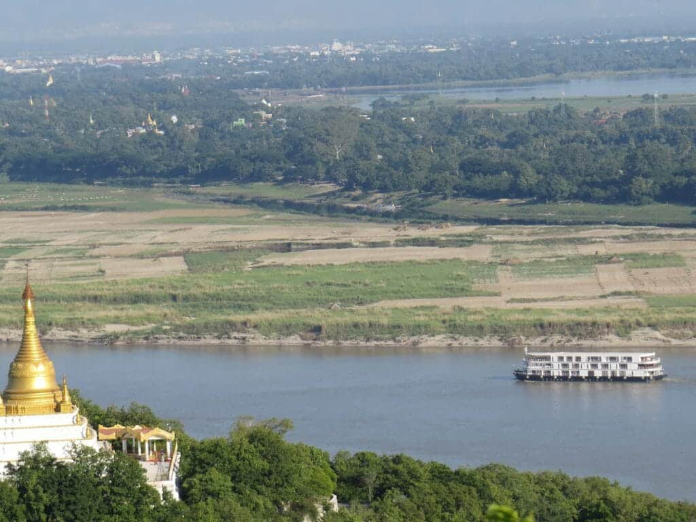
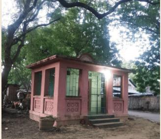
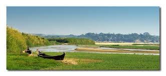

A river-port town named for the white sandbars that surface along its banks each dry season. Settled since the Bagan era, Seikphyu is known today as the heart of Myanmar's onion-growing country.
နွေရာသီတွင် ဆိပ်ကမ်းပေါ်မှာ ဖြူဖွေးသော သဲသောင်များ ပေါ်ထွက်လေ့ရှိသည့်အတွက် "ဆိပ်ဖြူ" ဟု နာမည်တွင်ခဲ့သော မြစ်ဆိပ်မြို့လေး။ ပုဂံခေတ်ကတည်းက တည်ရှိခဲ့ပြီး ယနေ့တိုင် ကြက်သွန်နီစိုက်ပျိုးမှုဖြင့် ထင်ရှားသည်။
Seikphyu Township lies on the western bank of the Irrawaddy River, right at the point where the Irrawaddy meets the Yaw River. It sits directly across the water from Chauk, in neighbouring Magway District, and the two towns are linked by a river-crossing bridge.
The name "Seikphyu" — meaning roughly "white landing" — is thought to come from the pale sandbars that emerge along the riverside landing each dry season. The town's original name was "Seiktphyu"; local schoolteacher U Chit Sein proposed the change to the current spelling in 1975, and it was formally adopted.
Local records suggest the village already existed during the Bagan era, in the time of King Anawrahta. The township itself was formally constituted in 1885, when the area was placed under Pakokku District and a township office was opened at Zeegat village.
ဆိပ်ဖြူမြို့နယ်သည် ဧရာဝတီမြစ်၏ အနောက်ဖက်ကမ်းတွင် တည်ရှိပြီး ဧရာဝတီမြစ်နှင့် ယောချောင်းတို့ ဆုံရာနေရာမှာ ပါဝင်နေသည်။ မကွေးခရိုင်အပိုင်း ချောက်မြို့နှင့် မြစ်ကိုကျော်၍ မျက်နှာချင်းဆိုင်လျက် ရှိကာ မြစ်ကူးတံတားတစ်စင်းဖြင့် ချိတ်ဆက်ထားသည်။
"ဆိပ်ဖြူ" ဟူသောအမည်မှာ နွေရာသီတွင် ဆိပ်ကမ်းပေါ်တွင် ဖြူဖွေးသော သဲသောင်များ ထပေါ်လေ့ရှိသည့်အတွက် ခေါ်ဝေါ်ခဲ့ကြောင်း ယူဆရသည်။ မူလအမည်မှာ "ဆိတ်ဖြူ" ဖြစ်ခဲ့ပြီး ၁၉၇၅ ခုနှစ်တွင် ဒေသခံကျောင်းဆရာကြီး ဦးချစ်စိန်၏ တင်ပြချက်အရ ယခုကဲ့သို့ "ဆိပ်ဖြူ" ဟု အမည်ပြောင်းလဲခဲ့ခြင်း ဖြစ်သည်။
ပုဂံခေတ် အနော်ရထာမင်း လက်ထက်ကတည်းက ဆိပ်ဖြူရွာသည် တည်ရှိနေခဲ့ပြီး ဖြစ်ကြောင်း သမိုင်းမှတ်တမ်းများက ညွှန်ပြသည်။ ၁၈၈၅ ခုနှစ်တွင် ပခုက္ကူခရိုင်စီရင်စုအောက် မြို့နယ်အဖြစ် တရားဝင် ဖွဲ့စည်းခဲ့သည်။
Centuries as a river-landing town have shaped Seikphyu's place on the map.
ရာစုနှစ်ပေါင်းများစွာ မြစ်ဆိပ်မြို့အဖြစ် ရပ်တည်လာခဲ့သော ဆိပ်ဖြူ၏ အရေးပါသည့် အချိန်ကာလများ။
Local accounts and historical notes suggest a settlement already stood here during the reign of King Anawrahta.
အနော်ရထာမင်းလက်ထက်မှာပင် ဆိပ်ဖြူရွာသည် တည်ရှိပြီးဖြစ်ကြောင်း သမိုင်းအထောက်အထားများအရ မှန်းဆရသည်။
The area was brought under Pakokku District and formally constituted as a township, with its office opened at Zeegat village.
ဆိပ်ဖြူမြို့ နယ်နိမိတ်တစ်ခုလုံးကို ပခုက္ကူခရိုင် စီရင်စုအောက်တွင် သွင်းပြီး မြို့နယ်အဖြစ် တရားဝင်ဖွဲ့စည်း၍ ဇီးကပ်ရွာတွင် မြို့ပိုင်ရုံး ဖွင့်လှစ်ခဲ့သည်။
At the proposal of local schoolteacher U Chit Sein, the original name "Seiktphyu" was changed to the modern spelling, "Seikphyu."
ဒေသခံကျောင်းဆရာကြီး ဦးချစ်စိန်၏ တင်ပြမှုဖြင့် "ဆိတ်ဖြူ" ဟူသော မူလအမည်ကို ယခုခေတ်သုံး "ဆိပ်ဖြူ" ဟု ပြောင်းလဲ အတည်ပြုခဲ့သည်။
A road, rail, and river-bridge junction, Seikphyu now functions as a transport hub for the surrounding region.
ကားလမ်း၊ မီးရထားလမ်းနှင့် မြစ်ကူးတံတားတို့ ဆုံစည်းရာ ဒေသအဖြစ် လမ်းပန်းဆက်သွယ်ရေး ဗဟိုချက်တစ်ခု ဖြစ်လာခဲ့သည်။
Agriculture is the township's main industry, and Seikphyu's red onions carry a strong reputation in Myanmar's onion markets.
စိုက်ပျိုးရေးသည် ဆိပ်ဖြူမြို့နယ်၏ ပင်မစီးပွားရေးဖြစ်ပြီး၊ ဆိပ်ဖြူကြက်သွန်နီသည် မြန်မာ့ကြက်သွန်ဈေးကွက်တွင် နာမည်ကျော်ကြားသည်။
Grown along the Yaw River and on the fresh alluvial islands of the Irrawaddy during the dry months, December to April.
ယောချောင်းတလျှောက်နှင့် ဧရာဝတီမြစ်ကမ်းပါး မြေနုကျွန်းများပေါ်တွင် မိုးနည်းသော ဒီဇင်ဘာမှ ဧပြီအတွင်း စိုက်ပျိုးလေ့ရှိသည်။
As a port on the Irrawaddy, Seikphyu plays a role in the steady flow of goods up and down the river.
ဧရာဝတီမြစ်ပေါ်ရှိ သင်္ဘောဆိပ်အဖြစ် ကုန်စည်များ တင်ပို့သွင်းကုန်များ စီးဆင်းရာ အရေးပါသည့်ဆိပ်ကမ်း ဖြစ်သည်။

Seasonal islands that rise and fall with the river are farmed using techniques suited to this shifting land.
ရာသီအလိုက် ရေတက်ရေကျမှု ပေါ်မူတည်ပြီး ပေါ်ထွက်လာသော မြေနုကျွန်းများအပေါ် ဒေသန္တရ စိုက်ပျိုးနည်းများ အသုံးပြုသည်။
Cultural and religious sites that anchor the riverside town.
မြစ်ဆိပ်မြို့လေး၏ ယဉ်ကျေးမှုနှင့် ဘာသာရေးဆိုင်ရာ နေရာများ။
The town's guardian pagoda; its original name was later changed to "Shwe Min Wun."
မြို့ကျက်သရေဆောင် ဘုရားကြီးဖြစ်ပြီး မူလအမည် "ရွှေမင်းဝံ" မှ "ရွှေမင်းဝန်" ဟု ပြောင်းလဲခဲ့သည်။

A spirit shrine of local significance, sited near the township sports ground.
ဒေသခံများ ကိုးကွယ်ယုံကြည်ရာ နတ်ကွန်းတစ်ခုဖြစ်ပြီး မြို့နယ်အားကစားကွင်းအနီးတွင် တည်ရှိသည်။

Where the white sandbars appear each dry season — the source of the town's name.
နွေရာသီတွင် ထင်ရှားသော သဲသောင်များ ပေါ်ထွက်ရာနေရာ၊ မြို့အမည် ဇာစ်မြစ်နှင့် ဆက်စပ်နေသည့် နေရာ။
Several highways converge here, alongside a railway station and a bridge across the Irrawaddy.
ကားလမ်းများ ဆုံစည်းရာ၊ မီးရထားဘူတာရုံရှိပြီး ဧရာဝတီမြစ်ကူး တံတားပါရှိသဖြင့် လမ်းပန်းဆက်သွယ်ရေး ကောင်းမွန်သည်။
Highways connect Seikphyu by car to neighbouring townships and larger towns.
အိမ်နီးချင်း မြို့နယ်များနှင့် မြို့ကြီးများသို့ ကားဖြင့် အလွယ်တကူ သွားလာနိုင်သည်။
A bridge spans the Irrawaddy, linking Seikphyu directly to Chauk.
ဧရာဝတီမြစ်ကို ကျော်ဖြတ်၍ ချောက်မြို့သို့ တိုက်ရိုက်ဆက်သွယ်ပေးသော တံတားတစ်စင်း ရှိသည်။
A station connects the town to the regional rail network.
ဒေသတွင်း မီးရထားလမ်းကွန်ရက်နှင့် ဆက်သွယ်ထားသော ဘူတာရုံရှိသည်။
In the dry season, Saw, around 70 miles west, is reachable by road.
နွေရာသီတွင် အနောက်ဖက် မိုင် ၇၀ ခန့်အကွာရှိ ဆောမြို့သို့ ကားလမ်းဖြင့် ဆက်သွယ်နိုင်သည်။
A selection of the township's 142 village tracts.
ဆိပ်ဖြူမြို့နယ်အတွင်း ကျေးရွာအုပ်စု ၁၄၂ ခုအနက် အချို့ကို အောက်တွင် ဖော်ပြထားသည်။